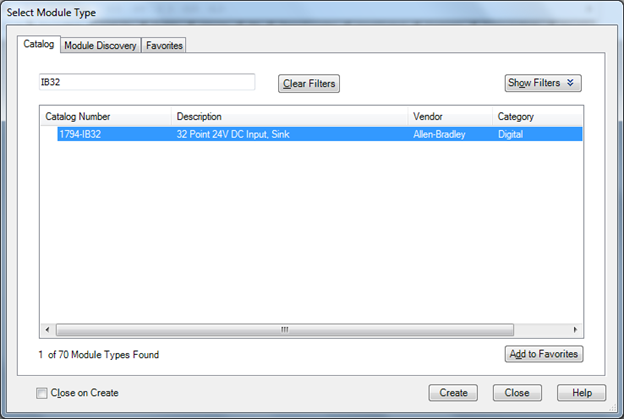
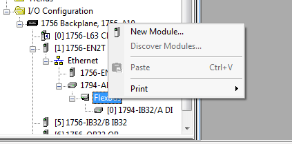

[Logix] Bài 12: Cấu hình Remote I/O trong Rslogix 5000
Ngày đăng: 25/10/2012 — Cập nhật: 2025
Tiếng Việt | English below
Mô hình kết nối Remote IO
- Controllogix (như cấu hình các bài trước)
- Kết nối với một trạm Remote IO qua Ethernet
Remote IO ở đây sử dụng FlexIO thông dụng của Rockwell. Ngoài FlexIO còn có PointIO, việc cấu hình cũng tương tự.

Thêm mô đun truyền thông Ethernet
Thêm mô đun truyền thông Ethernet trên Chassis chính (ở đây sử dụng mô đun 1756-EN2T)


Cấu hình mô đun Ethernet

Sau khi tạo xong mô đun Ethernet, ta thấy xuất hiện biểu tượng “Ethernet”. Đến đây, chọn New Module để tạo các mô đun Remote IO.

Thêm mô đun truyền thông trên Remote IO
Mô đun đầu tiên phải tạo trên Chassis Remote IO chính là mô đun truyền thông Ethernet (ở đây là mô đun 1794-AENT).


Khi cấu hình xong, ta thấy mô đun 1794-AENT xuất hiện, phía dưới có biểu tượng FlexBus, nơi tạo mới thêm các mô đun IO.

Thêm các mô đun IO
Chọn New Module để thêm các mô đun IO (ở đây là 1794-IB32 và 1794-OB16D).



OK



Kiểm tra Tag IO
Mở “Controller Tag” sẽ thấy thêm các Tag mới xuất hiện, đó chính là các Tag IO cho các mô đun vừa cấu hình. Các Tag remote IO này sử dụng bình thường như các Tag khác trong chương trình.

Ghi chú
- Tùy theo CPU mà số lượng trạm Remote IO tối đa có thể cấu hình.
- Chú ý Revision của các mô đun khi cấu hình.
Tài liệu tham khảo
Giap Van Vy – 2012
[Logix] Lesson 12: Configure Remote I/O in RSLogix 5000
English version
Remote IO connection model
- Controllogix (as in previous lessons)
- Connect to a Remote IO station via Ethernet
Remote IO here uses Rockwell's popular FlexIO. Besides FlexIO, there is also PointIO, configuration is similar.
Add Ethernet communication module
Add Ethernet communication module on the main Chassis (here using 1756-EN2T)
Configure Ethernet module
After creating the Ethernet module, the “Ethernet” icon appears. Now, select New Module to create Remote IO modules.
Add communication module on Remote IO
The first module to create on the main Remote IO Chassis is the Ethernet communication module (here 1794-AENT).
After configuration, the 1794-AENT module appears, below is the FlexBus icon, where you can add IO modules.
Add IO modules
Select New Module to add IO modules (here 1794-IB32 and 1794-OB16D).
OK
Check IO Tags
Open “Controller Tag” to see new Tags, which are IO Tags for the newly configured modules. These remote IO Tags are used like any other Tags in the program.
Notes
- Depending on the CPU, the maximum number of Remote IO stations can be configured.
- Pay attention to module Revision when configuring.
Reference
Giap Van Vy – 2012